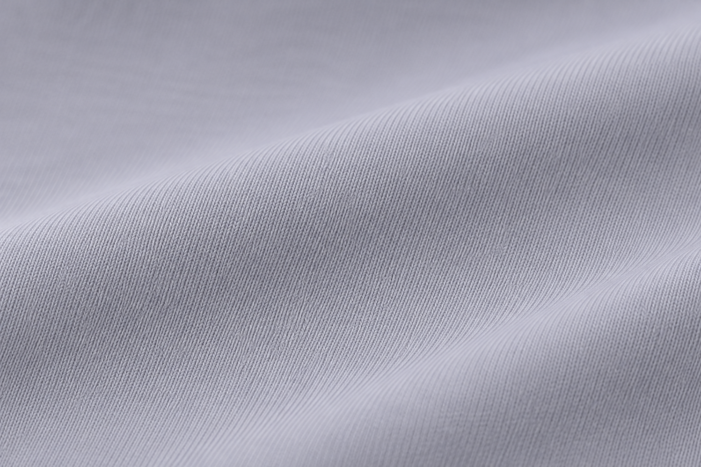
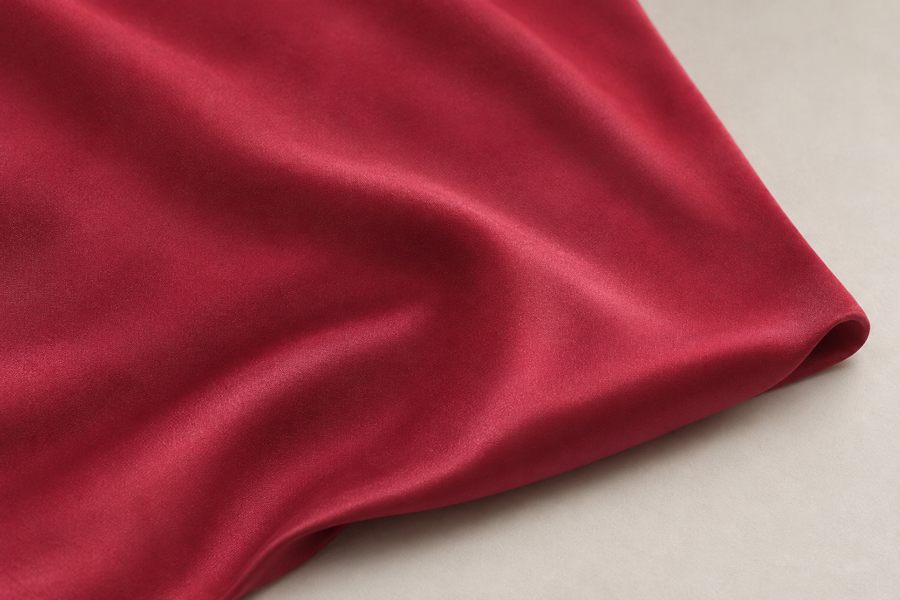

Fabrics
Knitted and supplied by Hwoasung,
these are our core fabrics.
Our fabrics
Fabric images are illustrative.

Polar Fleece
A knitted fabric with a brushed surface
Explore fabric ↗
Interlock
A double-knit fabric
Explore fabric ↗
T/R Single
A single-knit fabric using polyester and rayon
Explore fabric ↗
DTY Single
A single-knit fabric using DTY yarn
Explore fabric ↗
Bodre
A knitted fabric using FDY yarn
Explore fabric ↗